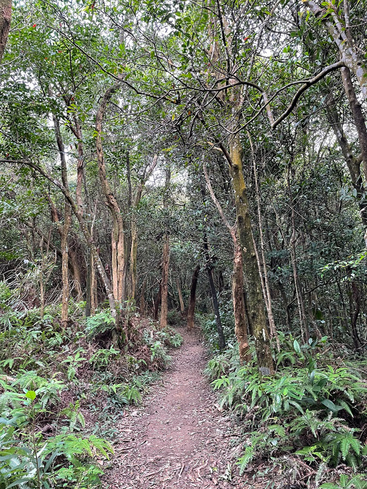

台北大縱走是沿台北盆地外圍山脊的登山路線，北起關渡，南至貓空全長約92公里。
參加的第一步驟要先下載「健行筆記」APP，每次出發前要下載離線地圖GPX，每條路線需沿途集滿7個寶石。
第一段：捷運關渡站－二子坪服務站
從捷運關渡站下車，經台北藝術大學到忠義山、貴子坑、面天坪至二子坪。這段路線清靜幽美，走著走著心中總是浮起這首詩句：
清晨入古寺，初日照高林 曲徑通幽處，禪房花木深 山光悅鳥性，潭影空人心 萬籟此俱寂，惟余鐘磬音曲徑通幽處雖無禪房，卻總是古木參天，綠蔭包覆，整段緩升近1000公尺，走起來還算輕鬆。
第二段：面天坪涼亭－小油坑服務站
下載完離線地圖我也沒多看一眼，從二子坪開始一路平坦，直到看到往大屯的路標，心中隱隱覺得不妙……距離上次走上大屯已有十年了吧，除了垂直向上的恐怖記憶之外沒有其他的。這次又要再度挑戰橫看成嶺側成峰，遠近高低各不同的大屯群峰，西峰走完有南峰，南峰走完還有主峰，真的有種峰峰相連到天邊的感覺。還好一路上許多黑色蝴蝶翩然飛舞相伴來給我們加油打氣(p4)。大屯群峰結束代表後面的路輕鬆了，往竹子湖的方向一切都柔美了起來，海芋田、繡球花(p5)花團錦簇，第二段在花海中圓滿達成。
第三段：小油坑－風櫃口
這段因為風櫃口公車班次少，因此我們分兩次走，一次是小油坑到七星山來回、一次是風櫃口到擎天崗來回。七星山標高1120公尺，是台北市第一高峰，經常雲霧繚繞，有種煙雨濛濛的仙境之美。儘管登頂時細雨斜織，在主峰上排隊照相的人潮依舊不減。風櫃口到擎天崗則是豐富多變的景觀，先來一段走在稜線上的孤寂荒涼(p7)，接著進入筆直柳杉林(p8)，又稱黑森林，陽光從間隙灑下如夢似幻，之後又接上一段風吹草低見牛羊(p9)的綠野風光。
第四段：風櫃口－大湖公園
這段我們選擇從大湖公園起登，走進綠意盎然的大溝溪生態中心，經圓覺瀑布到白石湖、碧山、梅花山到風櫃口。這段路的樹林顯得細緻精巧(p10)，在鳥語蟲鳴陪伴下輕鬆完成。風櫃口公車三小時一班，我們一路上有注意控制時間，也剛好在公車抵達前走到公車站，等了數分鐘未見公車蹤影，正巧有好心人開車路過，問我們要不要搭便車下山。真是太幸運了，此程不僅風景美，人心更美。
|  |
第五段：劍潭支線
此段是由碧山巖走忠勇山、文間山、經劍潭老地方到捷運劍潭站。(p11)跟陽明山的路線比起來這就是個郊山小品，輕鬆好走，劍潭老地方還可以欣賞一下飛機起降。
第六段：中華科大到捷運麟光站
這一路會經過九五峰、拇指山、糶米古道、地公嶺步道、軍功山、中埔山、富陽生態公園，路徑原始，在鬱鬱蔥蔥的樹林裡抬頭隨時可見101大樓(p12)。走這一段的前一天剛走過七星山，自以為健腳，兩天連走的結局就是此段在鐵腿中靠意志力完成。
第七段 : 政大公車站到飛龍步道
從政大公車站走到指南宮，沿著有濃厚的和風建築風格的指南宮步道拾級而上，彷彿置身日本，經綠光平台、茶展中心步道、貓空茶園、樟樹步道(p13)。整路都有茶香輕伴，在古樸清幽的樹林間走起來非常輕鬆舒適。